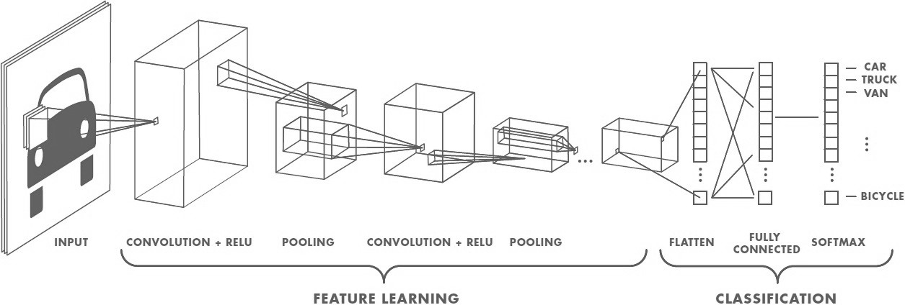
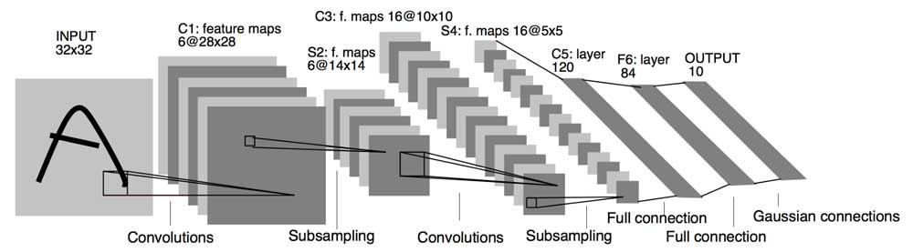
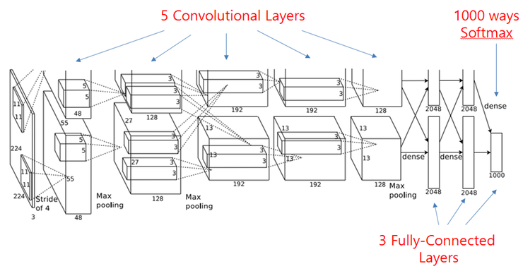

Convolutional neural networks#
Learning objectives#
Discover the general architecture of convolutional neural networks.
Understand why they perform better than plain neural networks for image-related tasks.
Learn how to build convnets with PyTorch.
Environment setup#
# pylint: disable=wrong-import-position
import os
# Installing the ainotes package is only necessary in standalone runtime environments like Colab
if os.getenv("COLAB_RELEASE_TAG"):
print("Standalone runtime environment detected, installing ainotes package")
%pip install ainotes
# pylint: enable=wrong-import-position
import platform
from IPython.display import YouTubeVideo
import numpy as np
import seaborn as sns
import torch
from torch import nn, optim
from torch.utils.data import DataLoader
from torchvision import datasets
from torchvision.transforms import ToTensor
from ainotes.utils.plot import plot_loss_acc, plot_fashion_images
from ainotes.utils.train import get_device, count_parameters, fit
# Setup plots
# Include matplotlib graphs into the notebook, next to the code
# https://stackoverflow.com/a/43028034/2380880
%matplotlib inline
# Improve plot quality
%config InlineBackend.figure_format = "retina"
# Setup seaborn default theme
# http://seaborn.pydata.org/generated/seaborn.set_theme.html#seaborn.set_theme
sns.set_theme()
# Print environment info
print(f"Python version: {platform.python_version()}")
print(f"NumPy version: {np.__version__}")
print(f"PyTorch version: {torch.__version__}")
# PyTorch device configuration
device, message = get_device()
print(message)
Python version: 3.11.1
NumPy version: 1.26.4
PyTorch version: 2.2.1
Using MPS GPU :)
Architecture#
Justification#
The visual world has the following properties:
Translation invariance.
Locality: nearby pixels are more strongly correlated
Spatial hierarchy: complex and abstract concepts are composed from simple, local elements.
Classical models are not designed to detect local patterns in images.
Topological structure of objects#
General CNN design#
The convolution operation#
Apply a kernel to data. Result is called a feature map.
Convolution parameters#
Filter dimensions: 2D for images.
Filter size: generally 3x3 or 5x5.
Number of filters: determine the number of feature maps created by the convolution operation.
Stride: step for sliding the convolution window. Generally equal to 1.
Padding: blank rows/columns with all-zero values added on sides of the input feature map.
Preserving output dimensions with padding#

Valid padding#
Output size = input size - kernel size + 1
Full padding#
Output size = input size + kernel size - 1
Same padding#
Output size = input size
Convolutions inputs and outputs#
2D convolutions on 3D tensors#
Convolution input data is 3-dimensional: images with height, width and color channels, or features maps produced by previous layers.
Each convolution filter is a collection of kernels with distinct weights, one for every input channel.
At each location, every input channel is convolved with the corresponding kernel. The results are summed to compute the (scalar) filter output for the location.
Sliding one filter over the input data produces a 2D output feature map.


Activation function#
Applied to the (scalar) convolution result.
Introduces non-linearity in the model.
Standard choice: ReLU.
The pooling operation#
Reduces the dimensionality of feature maps.
Often done by selecting maximum values (max pooling).

Pooling result#
Pooling output#

Training process#
Same principle as a dense neural network: backpropagation + gradient descent.
Interpretation#
Convolution layers act as feature extractors.
Dense layers use the extracted features to classify data.

History#
Humble beginnings: LeNet5 (1988)#

YouTubeVideo("FwFduRA_L6Q")
The breakthrough: ILSVRC#
Worldwide image classification challenge based on the ImageNet dataset.

AlexNet (2012)#
Trained on 2 GPU for 5 to 6 days.

VGG (2014)#
GoogLeNet/Inception (2014)#
9 Inception modules, more than 100 layers.
Trained on several GPU for about a week.

Microsoft ResNet (2015)#
152 layers, trained on 8 GPU for 2 to 3 weeks.
Smaller error rate than a average human.


Depth: challenges and solutions#
Challenges
Computational complexity
Optimization difficulties
Solutions
Careful initialization
Sophisticated optimizers
Normalisation layers
Network design
Multiclass classification example#
Data loading and visualization#
The Fashion-MNIST dataset contains 70,000 28x28 grayscale images of fashion items.
It is slightly more challenging than the ubiquitous MNIST handwritten digits dataset.
fashion_train_data = datasets.FashionMNIST(
root="data", train=True, download=True, transform=ToTensor()
)
fashion_test_data = datasets.FashionMNIST(
root="data", train=False, download=True, transform=ToTensor()
)
# Labels, i.e. fashion categories associated to images (one category per image)
fashion_labels = (
"T-Shirt",
"Trouser",
"Pullover",
"Dress",
"Coat",
"Sandal",
"Shirt",
"Sneaker",
"Bag",
"Ankle Boot",
)
plot_fashion_images(data=fashion_train_data, labels=fashion_labels, device=device)
Hyperparameters#
learning_rate = 1e-3
n_epochs = 10
batch_size = 64
Data preparation#
fashion_train_dataloader = DataLoader(fashion_train_data, batch_size=batch_size)
fashion_test_dataloader = DataLoader(fashion_test_data, batch_size=batch_size)
Model definition#
Expected architecture#
Model class#
Our model leverages the following PyTorch classes:
Sequential: an ordered container of modules.
Conv2d: for 2D convolutions.
ReLU: the corresponding activation function.
MaxPool2d: to apply max pooling.
Flatten: to flatten the extracted features into a vector.
Linear: fully connected layer used for final classification.
class Convnet(nn.Module):
"""Convnet for fashion articles classification"""
def __init__(self):
super().__init__()
# Define a sequential stack
self.layer_stack = nn.Sequential(
# Feature extraction part, with convolutional and pooling layers
nn.Conv2d(in_channels=1, out_channels=32, kernel_size=3),
nn.ReLU(),
nn.MaxPool2d(kernel_size=2),
nn.Conv2d(in_channels=32, out_channels=64, kernel_size=3),
nn.ReLU(),
nn.MaxPool2d(kernel_size=2),
# Classification part, with fully connected layers
nn.Flatten(),
nn.Linear(in_features=1600, out_features=128),
nn.ReLU(),
nn.Linear(in_features=128, out_features=10),
)
def forward(self, x):
"""Define the forward pass of the model"""
# Compute output of layer stack
logits = self.layer_stack(x)
# Logits are a vector of raw (non-normalized) predictions
# This vector contains 10 values, one for each possible class
return logits
fashion_convnet = Convnet().to(device)
print(fashion_convnet)
# Try to guess the total number of parameters for this model before running this code!
print(f"Number of trainable parameters: {count_parameters(fashion_convnet)}")
Convnet(
(layer_stack): Sequential(
(0): Conv2d(1, 32, kernel_size=(3, 3), stride=(1, 1))
(1): ReLU()
(2): MaxPool2d(kernel_size=2, stride=2, padding=0, dilation=1, ceil_mode=False)
(3): Conv2d(32, 64, kernel_size=(3, 3), stride=(1, 1))
(4): ReLU()
(5): MaxPool2d(kernel_size=2, stride=2, padding=0, dilation=1, ceil_mode=False)
(6): Flatten(start_dim=1, end_dim=-1)
(7): Linear(in_features=1600, out_features=128, bias=True)
(8): ReLU()
(9): Linear(in_features=128, out_features=10, bias=True)
)
)
Number of trainable parameters: 225034
Model training#
fashion_history = fit(
fashion_train_dataloader,
fashion_convnet,
nn.CrossEntropyLoss(),
optim.Adam(fashion_convnet.parameters(), lr=learning_rate),
epochs=n_epochs,
device=device,
)
Training started! 60000 samples. 938 batches per epoch
100%|| 938/938 [00:08<00:00, 109.03batches/s]
Epoch [ 1/ 10] finished. Mean loss: 0.52975. Accuracy: 81.36%
100%|| 938/938 [00:08<00:00, 110.20batches/s]
Epoch [ 2/ 10] finished. Mean loss: 0.33813. Accuracy: 88.28%
100%|| 938/938 [00:08<00:00, 111.82batches/s]
Epoch [ 3/ 10] finished. Mean loss: 0.29011. Accuracy: 89.96%
100%|| 938/938 [00:08<00:00, 111.08batches/s]
Epoch [ 4/ 10] finished. Mean loss: 0.25939. Accuracy: 91.00%
100%|| 938/938 [00:08<00:00, 111.78batches/s]
Epoch [ 5/ 10] finished. Mean loss: 0.23431. Accuracy: 91.91%
100%|| 938/938 [00:08<00:00, 111.28batches/s]
Epoch [ 6/ 10] finished. Mean loss: 0.21312. Accuracy: 92.65%
100%|| 938/938 [00:08<00:00, 107.65batches/s]
Epoch [ 7/ 10] finished. Mean loss: 0.19300. Accuracy: 93.61%
100%|| 938/938 [00:08<00:00, 106.89batches/s]
Epoch [ 8/ 10] finished. Mean loss: 0.17512. Accuracy: 94.27%
100%|| 938/938 [00:08<00:00, 110.95batches/s]
Epoch [ 9/ 10] finished. Mean loss: 0.15785. Accuracy: 94.97%
100%|| 938/938 [00:08<00:00, 111.15batches/s]
Epoch [ 10/ 10] finished. Mean loss: 0.14234. Accuracy: 95.60%
Training complete! Total gradient descent steps: 9380
Training results#
# Plot training history
plot_loss_acc(fashion_history)
plot_fashion_images(
data=fashion_train_data, labels=fashion_labels, device=device, model=fashion_convnet
)

Using a pretrained convnet#
An efficient strategy#
A pretrained convnet is a saved network that was previously trained on a large dataset (typically on a large-scale image classification task). If the training set was general enough, it can act as a generic model and its learned features can be useful for many problems.
It is an example of transfer learning.
There are two ways to use a pretrained model: feature extraction and fine-tuning.
Feature extraction#
Reuse the convolution base of a pretrained model, and add a custom classifier trained from scratch on top ot if.
State-of-the-art models (VGG, ResNet, Inception) are regularly published by top AI institutions.
Fine-tuning#
Slightly adjusts the top feature extraction layers of the model being reused, in order to make it more relevant for the new context.
These top layers and the custom classification layers on top of them are jointly trained.